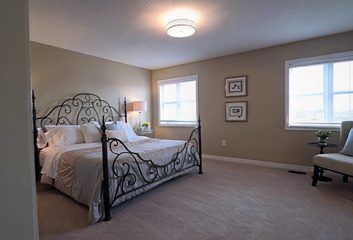
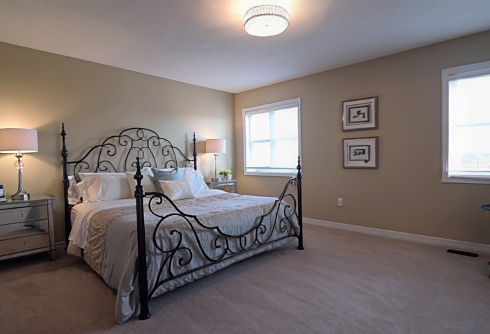

From sparse views
At least two images of the same scene, matched to camera slots on the trajectory.
Unifying 3DGS scene reconstruction, generation, and extrapolation with an autoregressive diffusion transformer.


ArgsWorld is a single autoregressive model for 3D Gaussian scenes. Reconstruction, generation, and extrapolation share the same weights: reconstruction is conditioned generation from a few posed views, not a separate per-scene optimization.
Given camera trajectories in OpenGL camera-to-world form, the model writes a Gaussian scene
(world.ply), a rendered video (final_world.mp4), and direct RGB predictions (direct_rgb.mp4).
At least two images of the same scene, matched to camera slots on the trajectory.
A reference image, a text prompt, and up to 24 cameras produce a new set of views. Text-only generation is also supported.
Continue the same scene along a second trajectory. The first segment fixes the coordinate frame and scale.
Linux, Python 3.11 or 3.12, and an NVIDIA GPU with BF16. Install the CUDA builds of PyTorch, then:
python -m pip install -r requirements.txt
python infer.py --mode generation \
--model_id weights/Wan2.2-TI2V-5B-Diffusers \
--ckpt weights/argsworld.ckpt \
--input_dir examples --output_dir outputs/generation \
--trajectory trajectory.json --images reference.pngWeights: Hugging Face. Inference also needs the Wan2.2-TI2V-5B-Diffusers base model.
Replace this block with the camera-ready BibTeX.
@inproceedings{argsworld,
title = {ArgsWorld: Unifying 3DGS Scene Reconstruction, Generation and Extrapolation with Autoregressive Diffusion Transformer},
author = {Anonymous},
booktitle = {Proceedings of the IEEE/CVF Conference on Computer Vision and Pattern Recognition},
year = {2026}
}